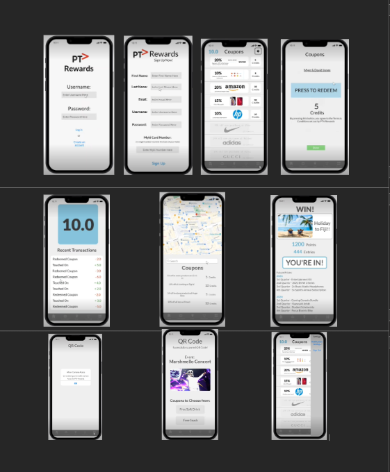
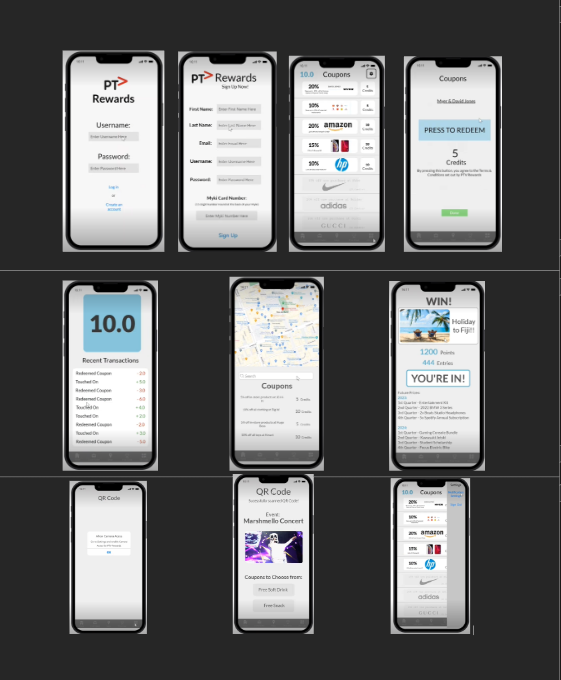

Project Description
Develop
Our project is based on our Assignment 2 Project Idea: PTV Rewards System.
We aim to develop both a website and mobile application, where the website is used for businesses to sign up and add coupon codes, and the mobile application is used for the PTV users to receive rewards and view their account, like a loyalty program.
Before figuring out the functionality of the project, we first must decide on how both the website and application will be designed. Coming up with a draft design for the website, we are able to distinguish how each webpage interacts with each other, as with the mobile application. Adobe XD was used to design and create the website interface, while Proto.io was used to create the mobile application.
The website is probably the most important aspect of the project, as this provides the foundation to the mobile application. The website stores the information for their added coupons, as well as allowing the business to make changes to their stores that have opted in to the rewards system. Along with this, businesses are able to view the statistics about which coupons are performing well and at which location. They also have access to view the revenue that the coupons provide over time.
The mobile application uses the information the website has access to to view the available coupons for nearby businesses. Users also have access to the amount of credits they have earned while touching on and off, and their coupon usage history. The app would also have access to the mobile’s camera system, to scan a QR code to earn even more rewards.
While the project can not be 100% completed within the few weeks we have had to work on it, a huge portion of it can be. The future of the project involves finding some other people that can help complete the project, such as people that can test both the website and the mobile application, and some database engineers to complete the project efficiently.
Passion
As a lot of people decide to take public transport to and from the city, introducing a rewards system would incentivise those to always touch on and off when travelling, with a benefit of supporting businesses by offering rewards and becoming more eco-friendly. As people in this group take public transport, creating a project that would directly affect our lives helped us find the motivation to complete the project to the best of our ability.
Trends
As technology has significantly advanced, the need to develop mobile applications on multiple operating systems has become necessary. Apple has ‘released a processor that allows both iOS and macOS apps to operate at the same time’(Appello 2022). As the expected users of this project will not use one specific mobile device, designing a project that is able to be used on multiple operating systems is crucial for the success of the project.
As our application resembles a loyalty program, businesses that take part in this project will potentially gain more customers as a result of more people taking public transport. If the project gains traction quickly, other companies will want to join in, due to the ‘fear of missing out’, or ‘FOMO’. As ‘FOMO’ is a great marketing strategy (Annex Cloud 2022), a company’s competitors could gain more customers, and pressure them to join the project.
How it Assists in our Future Careers
There are many skills that would be learnt throughout undertaking this project that would help people’s future careers. IT specific skills would be web design, app development and interconnecting systems between mobile applications and website data, where some general skills would be communication, teamwork, creativity and time management. Given that a lot of these skills are necessary for our previously mentioned career plans, working on a project like this would develop our skills and further our knowledge of the more intricate details of these topics.
Feedback
Taking feedback from the previous assignments, we found that there were some aspects of the project that could be improved. One of these aspects is managing our time better, as we had trouble with leaving the project until the last minute. In order to combat this, we decided to split up the work into smaller groups. As we knew we were going to be creating both a website and a mobile application, splitting up the work allows everyone to manage their time more efficiently, focusing their attention on their designated work, while having faith in the other group to do the best work possible.
Overview
Topic
This project “PTV Rewards System” is a system that tracks users when they touch on and off when using trams, trains or buses. When touching on and off, it will add a point to the user’s selected account that they would have needed to create on the PTV app. By using this system, it will encourage people to use public transport the right way, hoping to minimise the total amount of myki fines that are given out in a year. Moreover, with these enticing rewards, people are more likely to rely less on cars and use public transport making the environment a much more sustainable place.
Motivation
PTV rewards is an important project as it will have a positive impact in our community. People will rely less on cars to get to locations, which will improve fuel efficiency and reduce air pollution, economically benefiting the society. Moreover, with the increased complaints of users that have been fined due to not using their mykis over the past few years, hopefully with this reward system, it will reduce the amount of users being caught and fined hundreds of dollars as they will feel more inclined to touch on and off as they feel rewarded for doing the right thing. With the reliance of phones being used for pretty much everything, the usage of applications on phone devices is definitely still a current IT trend. With this being said, PTV rewards will fit perfectly with this current trend as it would be designed on an app, being linked to the actual PTV app. As our main purpose of this project is very eco-friendly and sustainable, it would show future employers that our methods and processes would be benevolent if we were to implement this idea into the real world, inviting them to work on this project.
Landscape
Some similar systems or projects that are available right now would be uber rewards. This company uses a similar reward system to our project in terms of accumulating points when utilising their service. However, what makes PTV rewards different from other competitors such as Uber rewards is that it entices people to do the right thing, which is to touch on and off when using public transportation. As of right now, there is really no reward system in terms of transport that focuses on creating a greater community hence, another key difference is that our project has a main focus to contribute in making the society a better place, by reducing the amount of fines that are given out to civilians that do not touch on or off and even influence the community to use public transport more often.
Detailed Descriptions
Aims
Our project “PTV rewards” is a system that aims to give back to the community by rewarding those that do the right thing when using public transport, which is to touch on and off. With many complaints on myki fares being too expensive, (averaging around $4.50 for adult fare per trip), it causes many people to not do the right thing and free load when using public transports. Moreover, this would lead to an increased number of fines given out to people which will get people more angry and create a negative impact on the community. Hence, with this rewards system in place, it will be a perfect incentive for people to do the right thing as some will now have a purpose to use their mykis correctly, resulting in less complaints on myki fares and fines given out.
One goal that would be helpful for achieving our aim is supporting small businesses. By partnering up with small businesses and having them give access to us to give discounts to our consumers, they would be advertised by PTV which is a big company and most definitely attracts a large market, resulting in increased sales and bigger profits. Supporting small businesses is a main factor when it comes to implementing our project, as it is the main incentive for people to touch on and off. As a result, achieving this small goal is crucial as by providing more discounts from many different small businesses, it will lead to happy customers doing the right thing, achieving our main goal.
Another goal would be to create a more eco-friendly liveable society. With this ptv reward system being introduced, it would increase the number of users using public transport and potentially reduce the reliance of using cars to get to certain places. Thus, with an increased demand in using public transport, it will result in a reduction of carbon emissions, air pollution and most importantly, fatal car crashes as there will be a QR code at festivals, or big events which will give access to the “PTV rewards system” app logging into their account and validating if they used public transport to get to the event/festival. With this being used, it will attract more users to use public transport as they feel a sense of reward when using public transport to get to the festivals and as a result less cars will be used overtime.
Plans and Progress
PTV Rewards App
Overview of the App
Features
The Progress
In Week 9, I researched possible software and websites that are free to use to create an app. I went to Appypie, then to Apphive and finally to Proto.io. I found that Proto.io was the best out of the three because it was easy to use after playing around with it and that it had a 15-day free trial. In Week 10, I designed the first couple of screens and added colour. I knew that this wasn’t going to be the final design but I thought that I needed to at least have one design so that I could add the features in. I added colour and the relevant content to each screen. Furthermore, I added a navigation bar at the bottom so that it would be easier to change from screen to screen within the app. In Week 11, I updated the screens so that they correlate with the Mock-Up sketches provided by the team whilst also adding more content to the credit wallet, prize draw and QR code screens. In Week 12, the other app group members began to finalise the design, changing the colour, moving objects around so that they look nice and gave it a final touch. In Week 13, I added the UI into the app. These UI features of Proto.io included buttons, screen transitions, changing screen states and gave the app a settings bar. When tapping onto one of the icons on the navigation bar, I made the screen transition so that it slid left if the icon on the right hand-side of the icon of the current screen. For example, if I am on the home page right now (icon is the left-most icon on the navigation bar) and I wanted to go to the credit tab, once I tab on the credit tab icon, the screen would slide left and transition to the credit tab. However, although this was the plan, I forgot to make sure I added the transitions before the free trial ended so some of the screens will have the transitions and some won’t. I made the first screen of the app the login page because it is usually what apps have their start screen as. I also added notifications. Once clicking the login button on the login page, it would transition to the home page with a notification stating that the user needs to give location access to the app. The same would happen if the user clicked onto the QR Code icon on the navigation bar. Eventually, I finished the UI aspect of the app and finalised everything. When sharing a Proto.io project, you are able to share it and preview it using a link. After the free trial expired, I was unable to access a preview, get another link nor edit the app itself. But thankfully, my other team members had downloaded a preview of the app which I didn’t know about.
Dead Ends
A main part of creating an app was to code it. As we had a time-restriction of a couple of weeks to create a project, it was not feasible to learn to code and implement it into the app. Another dilemma I had to face was to create the app for both IOS and Android. Again due to time constraints, I had to pick between the two. I ended up choosing IOS because I am familiar with it the most. Some of the features that we couldn’t include within the app are the filters feature on the home page, linking the app to the phone’s camera and using the user’s location. I was unable to add the filter feature because it would take too long to build as I would have to move every coupon around so that it matches the filter. If we multiply that by the amount of filters we would have, it would be a lot of work and not enough time to do so. I was unable to link the phone’s camera and location to the app because there is no feature on Proto.io that allows me to do so.
PTV Rewards Website
Overview of the Website
Since the PTV Rewards App focuses mainly on public transport riders, the website portion of this project should link PTV Rewards with the businesses that wish to partake. This should be an easy to use opt-in system where restaurant, retail owners and all businesses alike are able to offer coupons for their businesses, view how PTV Rewards has impacted the traffic of their store locations, and allow insight as to how their business’s coupons rank by how many consumers opt in to use them.
Features
A Sign Up Page:
This is where a business owner's unique details should be used to allow their business to be a part of PTV Rewards. These details should include the name of the organisation or business, the name of the business or franchise owner, a unique identifier such as a TFN, an ABN, and the owner's chosen password. This should also allow the user to click back to log-in just in case the wrong option was chosen.
An issue that could be foreseen with this is that if the sign up information is not unique knowledge of the business owner, and cannot be checked by PTV Rewards LTD. It could potentially allow non business owners to create and manage coupons for businesses.
A Log- In Page:
The Log in page should allow business owners and managers alike to be able to log in with the businesses ABN and secure password. This should also allow the user to select sign-up just in case the wrong option was chosen.
Coupon Page:
The coupon page shall be the home page that users see when they log into their account. It will include all the current active coupons for their business, displaying how many points have been assigned to each coupon. It will also include a small version of insights, including how many people have redeemed each coupon and which coupon is the most popular. And a small list of the most commonly used available coupons from other businesses. This will allow owners to be able to have an insight into which coupons are successful.
Locations Page:
The locations page will allow business owners to add and remove store locations. Ideally it is desired that these locations will be pre populated from the owners input of store name when they have signed up their business. This section can be linked with google maps to display all the active store locations stored by information already available from google. Ideally this would allow minimal effort for the business owner and only small adjustments if new locations are added or other locations are disbanded. However it could also be structured that the locations page would be able to take input from a structured excel spreadsheet and use each row to auto fill in different business locations to be used by the map section of the PTV Rewards App. This would help in cases of newer businesses or businesses that have uploaded their address to google.
Insights Page:
Businesses should be able to see the benefits of using PTV Rewards. That is why a detailed insights page is extremely important to be made available to business owners. Insights should include:
A graph detailing the amount of coupons redeemed over time.
A graph displaying revenue brought in by the use of coupons over time.
A list detailing the most popular locations down to the least popular locations of which these coupons are being redeemed at.
A ranking of business coupon popularity. This will compare the amount of total coupons redeemed by PTV Rewards App users for their business with other businesses.
The Progress
Sign Up Page:
Upon designing the sign up page, we ran into quite the dilemma about what kind of information would be secure enough for a business to be able to sign up for PTV Rewards. Originally we thought that the ABN would have been enough, however it was extremely easy to find the ABN of Gong Cha PTY. LTD and therefore came to the conclusion that the whole sign up process using ABN would not be adequate.
We then went on to Uber Eats and attempted to sign up as a new McDonalds restaurant. Uber required fields such as, “Business Name”, “Address”, and our name and contact information. After putting these through we were hoping to be met with the next set of security questions that would uniquely identify ourselves as a valid owner of McDonalds, however we were met with this screen instead.
Upon realising this would not go any further, we decided to call a couple businesses featured on Uber Eats to speak to owners or managers of restaurants asking what the sign up process for them was. Unfortunately we were not able to connect with any business owners, however were able to connect to the area manager for Burger Road who was able to give us some advice regarding the sign up page. From this we were able to discover that business owners, unless very small, generally don't do anything related to signing up for Uber Eats and the like, and it's generally up to a group of people or shareholders that do this. They then generally sign up through an ABN, or an ACN (if they are a larger company). Our question regarding this was “could anyone then just sign up for Uber as a restaurant?” His response was that yes, you could, but it is up to the company i.e Uber, to do those necessary privacy and security checks before it is allowed on their platform.
Because of this information we were able to move forward with our design for the Sign Up page, using ABN/ ACN to create an account – and then using what we saw from Uber, after signing up you would then be redirected to a page similar suggesting that PTV Rewards would be in contact.
Later on in development, it would be required that extensive background research into each participating business would need to be done in order to ensure that all accounts created were legitimate.
Log-In Page:
For the login page we opted to use ABN and a unique password for the users to be able to access their account with.
Coupon Page:
The coupon page has been split into two sections, the active coupon section which is related to the user, and the most popular section will provide insight to which coupons have been the most successful. This is to allow business owners to review their own coupons to allow for a higher rate of success to their business. When clicking on an active coupon, the user will be able to view the individual coupon insights i.e. how many people have redeemed the coupon, and where this coupon ranks on the value tier list. The value tier list will be organised by which coupons offer the most money off. For example a 15 percent off coupon for an apple iphone will rank much higher in the tier list than a 15 percent off coupon for a bubble tea. This should help incentivise higher reward coupons.
Locations Page:
The login page for the moment allows users to view the active locations of which stores currently allow the active coupons to be redeemed at. The user is able to add and remove these locations easily. There is also a button which allows the user to import an excel file sheet of all the business locations. This will help with larger businesses so that not every location has to be entered manually. This will feed into the map portion of the PTV Rewards App, which will only display store locations where these coupons are redeemable. Any other locations of a store which are not included in this rewards system will not be shown as a location available to redeem these coupons. This will allow store owners to be able to tailor which locations they would like to attract more attention or traffic to.
Insights Page:
For the insights page, since we aren't able to actually use any data from coupons redeemed, or revenue gained, we had to create dummy graphs of what might be displayed in this section. The most important thing to achieve was to display what WOULD be shown given the time to be able to implement this.
Dead Ends
We were unable to implement quite a few wanted features for this website due to time constraints and skill constraints. The features of which were unable to be implemented are as follows:
Locations Page:
We were unable to allow for the user to remove locations or add locations with the plus minus buttons created on the prototype. Given more time this would be a necessary feature and we may have been able to create this effect the same way that we created the “view coupons” page, where we would create a screen copy of the original locations page, remove one of the coupons and link the removal button to that copy of the page not containing that location. However given time constraints this was not possible. Also would not actually be beneficial to the design later on when actually making the website live.
Insights Page:
For the insights page we had to use dummy data in order to be able to create the illusion of what the insights page would look like once enough data had been received. Ultimately as businesses gave feedback, we would add more insights to reflect the needs of businesses and what they would want to view when using this application.
General Dead Ends:
We were unable to allow for any user input in the log in, sign in slots and thus used Gong Cha for the purpose of this prototype. This was solely due to the project time constraints. We were also unable to implement the update of coupons or profile information due to this reason also. If we were able to hire the proper employees and procure the right tools, it would be necessary to fulfil these requirements in order for our design to go live.
The Story
Initially, it all started with a different project which was about security safety however the whole group came to a decision to work on this project as it is more suitable and creates a bigger positive impact to the society. After we decided that we were going to work on this “PTV reward system” project, we needed to figure out the main aim and smaller goals that can help achieve this idea.Next we scoped an overview to create an app and a website in order to advertise and promote our project to the public. From then on, we branched off into two groups, one group of 3, working on the app, and the other group of 4 working on the website.
Where we are up to: App The group of 3 has finished and are polishing the app. The login page will be shown first when the user enters the app, which from then on they are asked to enter their details and most importantly their myki card number which is located at the back of the user’s myki. From then on, they will be given access to the rewards and the amount of points that are needed to receive discounts from certain businesses.
Where we are up to: Website Our whole group has finished the important components that are required for our project. We included a login page, which then requires you to input an abn number and a password. From there, the customer will be given options that they can choose from, managing coupons, the locations of the businesses that offer the discounts and the insights which are the statistics of the amount of coupons that are used for each business.
Roles
Scope and Limits
All projects have their limits as a result of deadlines. In our project in particular, we understand that there will be some aspects of PTV Rewards that will not be completed. One of these features include the actual coding of the app, which is the basis of developing an app. As learning a programming language can take very long to master, it means that we are not able to implement some sort of code into our app. However, even though we cannot implement code, it does not mean that we cannot develop screens that show on the app. Using proto.io, we are able to design how the app would look and how screens would transition without needing any code. Another limit would be that there would be some features within the app that cannot be developed. For example, due to the time constraint, we are unable to develop the ‘filter’ feature on the home page that filters coupons based on the number of credits required, location, preferences etc. Furthermore, as we have a maps feature, which uses the geographical location of the user, and a QR code tab, which utilises the phone’s camera, these will not work in the prototype. The best we are able to achieve is in the maps feature is to upload a photo of a location on Google Maps and put it into the app. For the QR code tab, we were able to implement a notification that tells the user to allow camera access for the app and give an example of the screen of successfully scanning a QR code. Moreover, another limit could be that we cannot develop a login system. As our app requires users to create an account and sign-in, it would need the use of a system that stores the data of created accounts. Due to time, we cannot utilise this. On the other hand, the outcomes that we are able to show are the screens and their transitions within the app. We are also able to show the website that allows businesses to login and add their coupons and view their statistics.
Tools and Technologies
App Group:
Proto.io: Allows users to develop an idea and build a prototype. It requires a subscription or a 15-day free trial to access all features. Features include screen transitions, UI components, templates, motion, item/object animations. A computer is needed with an updated browser. No group member has prior experience using this tool.
Website Group:
We required an adobe XD licence in order to be able to accomplish the website prototype however we were able to use a free pro trial instead in order to be able to create the website. The licence expires on the assignment due date. The only hardware needed for this prototype was a PC to be able to run adobe XD The members working on Adobe XD had no previous experience or knowledge with this application so there was a big trial and error period to be able to figure out how to work it.
Testing
Risks
Artifacts
App Artifacts
 
